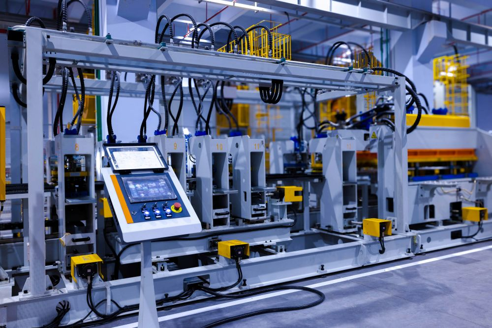
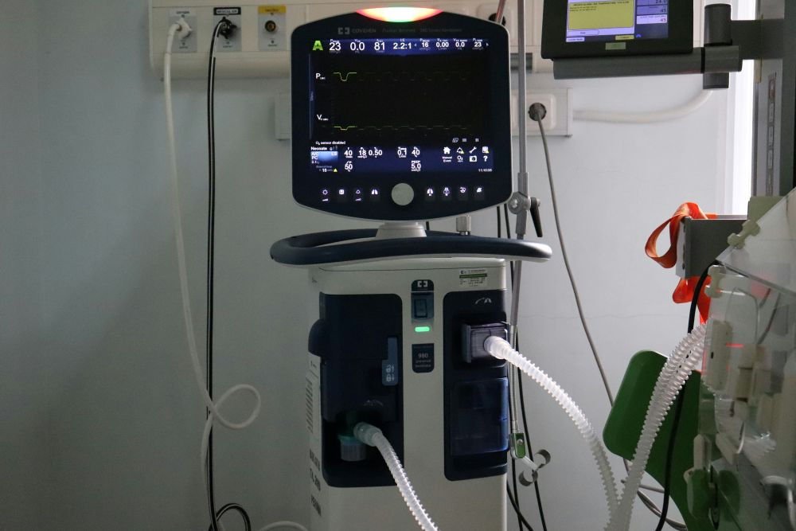

Industry Insights & Success Stories
See how 5G is already making a tangible impact across various sectors.
Real-World Case Studies
Explore how innovative companies are harnessing the power of 5G to transform their operations, enhance customer experiences, and unlock new revenue streams.

Smart Manufacturing: Robotics & Automation
Learn how "TechForward Industries" implemented a private 5G network to power real-time robotic control and predictive maintenance, boosting productivity by 30%.

Telehealth Revolution: Remote Patient Monitoring
"MediConnect Solutions" leveraged 5G's reliability and low latency to provide advanced remote patient monitoring and virtual consultations, improving patient outcomes in rural areas.
Retail Reimagined: AR & Personalized Shopping
"StyleSphere Boutique" is using 5G to offer immersive AR try-on experiences and personalized in-store recommendations, significantly boosting customer engagement and sales.
Logistics Optimization: Smart Supply Chains
"GlobalTrans Co." optimized their supply chain with 5G-enabled tracking and autonomous vehicles in their warehouses, leading to faster delivery times and reduced operational costs.
What Industry Leaders Are Saying
"5G is not just an upgrade; it's the foundational technology for the next wave of innovation. We're seeing unprecedented efficiencies and capabilities that were unimaginable a few years ago."
"The shift to 5G has been pivotal for our data-intensive applications. The speed and reliability have allowed us to scale our AI-driven analytics and provide real-time insights to our clients like never before."
"For the Internet of Things to truly flourish, 5G is essential. The ability to connect a massive number of devices reliably and with low latency is opening up entirely new business models and services."